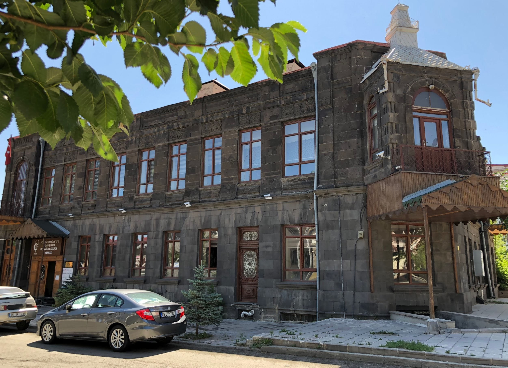
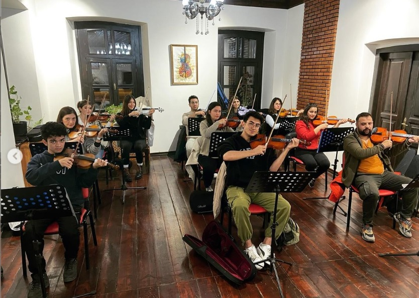
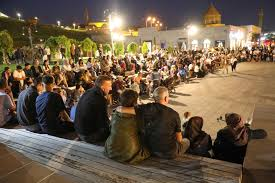

Müzik, sahne sanatları ve tiyatro alanında eğitim veren konservatuvar, yıl boyunca çeşitli konserler ve sahne performanslarına ev sahipliği yapar.
Adres: Kafkas Üniversitesi Yerleşkesi, Kars
Etkinlik Türü: Konser, tiyatro, akademik gösteriler
Katılım: Etkinlik takvimine göre ücretsiz veya biletli

Atölyeler, sergiler ve yerel sanatçılara açık sahne imkanı sunan bu merkez, Kars’ın kültürel kalbinin attığı yerdir.
Adres: Yusufpaşa Mah., Merkez/Kars
Etkinlik Türü: Sergi, sanat atölyesi, söyleşi
Katılım: Ücretsiz
Kış aylarında düzenlenen müzik festivali, cazdan halk müziğine kadar farklı türleri Kars dinleyicisiyle buluşturur.
Yer: Kültür Merkezi, Sanat Evi ve çeşitli mekanlar
Etkinlik Türü: Konser, dinleti
Katılım: Bazı etkinlikler ücretsizdir

Bağımsız sinema gösterimleri, söyleşiler ve yönetmen buluşmalarıyla dolu bir sinema şöleni her yıl Kars’ta düzenlenmektedir.
Adres: Kars Kültür Merkezi ve seçili salonlar
Etkinlik Türü: Film gösterimi, panel, atölye
Katılım: Ücretsiz veya sembolik ücretli